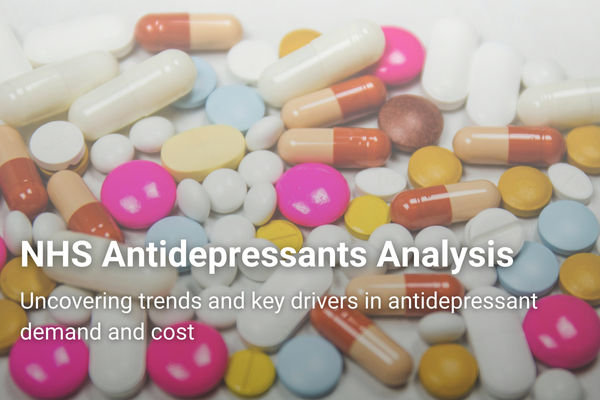
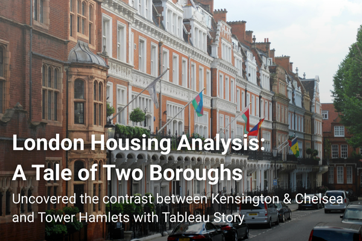
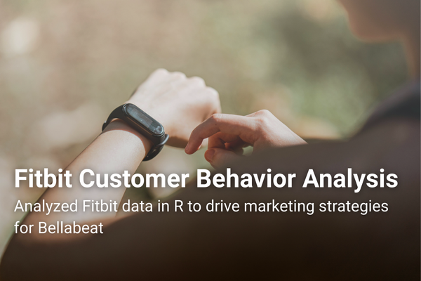
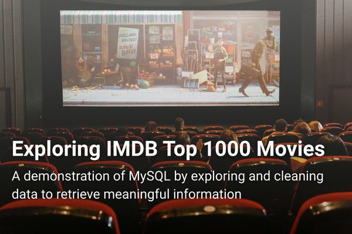

Skills: EDA, Data Cleaning, Visualization, Python
Data Analyst • Problem Solver
A Passion for Data Discovery
As a data analyst, I’m passionate about turning complex data into clear, compelling stories. With expertise in Python, SQL, and Tableau, I’ll help uncover meaningful insights tailored to your business. Let’s work together to turn your data into a powerful tool for driving success!

Skills: EDA, Data Cleaning, Visualization, Python

Skills: Storytelling, Visualization, Tableau

Skills: EDA, Data Cleaning, Visualization, R

Skills: EDA, Data Cleaning, SQL
Have a question, idea, or project in mind? I’m here to help.
Using Python (pandas), analysed NHS prescribing data from 2021 to 2024 across antidepressant types and the seven NHS regions in England. Began by exploring overall prescribing trends, costs and regional differences to identify the main drivers. Once Sertraline Hydrochloride emerged as the largest contributor to both prescription volume and cost, narrowed the analysis to examine its seasonal demand, regional unit cost variation and contribution to overall spending.
Sertraline Hydrochloride was the biggest driver of both prescription volume and total cost, while overall antidepressant costs fell by 20% between 2021 and 2023.
The analysis uncovered trends in the demand and cost of antidepressants prescribed through the NHS in England, which were largely driven by specific drugs, particularly Sertraline Hydrochloride. Identifying this key driver supports more informed procurement strategies and cost control efforts. The analysis also highlights seasonal demand and regional cost variations, helping public health teams improve forecasting, resource allocation and pricing consistency.
Built an interactive Tableau story using housing and socioeconomic data from the London Datastore. Started by exploring London-wide trends in house prices and transactions before drilling down into Kensington & Chelsea and Tower Hamlets as contrasting case studies. Combined housing, income, population and wellbeing data with supporting research to explain the differences observed and provide broader context beyond the visualisations.
Despite their close proximity, the average house price in Kensington & Chelsea was more than three times higher than in Tower Hamlets, while Tower Hamlets recorded the highest median salary in London.
This Tableau story explores the contrast in housing affordability and socioeconomic conditions across London boroughs. Starting with London-wide housing trends, it then examines Kensington & Chelsea and Tower Hamlets to reveal surprising differences in house prices, salaries, population growth and life satisfaction. The analysis provides a foundation for further investigation into factors such as housing types, new developments, resident demographics and local amenities.
Using R, selected and cleaned the relevant datasets from 18 Fitbit data files, standardising date and time formats before merging activity, sleep and heart rate records. Explored relationships between activity levels, sleep, heart rate and BMI to understand user behaviour. Since device wear time was not recorded, inferred wearing habits by comparing heart rate readings with periods of low or zero recorded activity to validate the findings.
Around 68% of users recorded fewer than 10,000 daily steps. However, heart rate data suggests this may underestimate activity levels because some users appeared to wear their devices only during exercise.
This analysis explores Fitbit smart device usage patterns to identify insights that could support Bellabeat's marketing strategy for its Leaf product. The findings suggest that many users may not wear their devices throughout the day, creating opportunities to promote the Leaf as a stylish and comfortable tracker designed for all-day wear. Pairing this with app features that encourage daily activity and progress tracking could help improve user engagement and support healthier habits.
Using MySQL, cleaned and prepared the IMDb Top 1000 Movies dataset before exploring it through a series of analytical questions. Applied SQL techniques including Common Table Expressions (CTEs), window functions, subqueries, aggregation functions and string manipulation to examine movie ratings, box office revenue, directors, actors, genres and trends across different decades.
Drama was the highest-grossing genre among films released in 2019, generating a combined box office revenue of $1.97 billion. Christopher Nolan was the most popular director by audience votes, while Alfred Hitchcock had the most films in the dataset.
This project showcases practical SQL skills through exploratory analysis of the IMDb Top 1000 Movies dataset. By answering a series of analytical questions, it demonstrates the use of advanced SQL techniques to clean, transform and extract insights from real-world data.